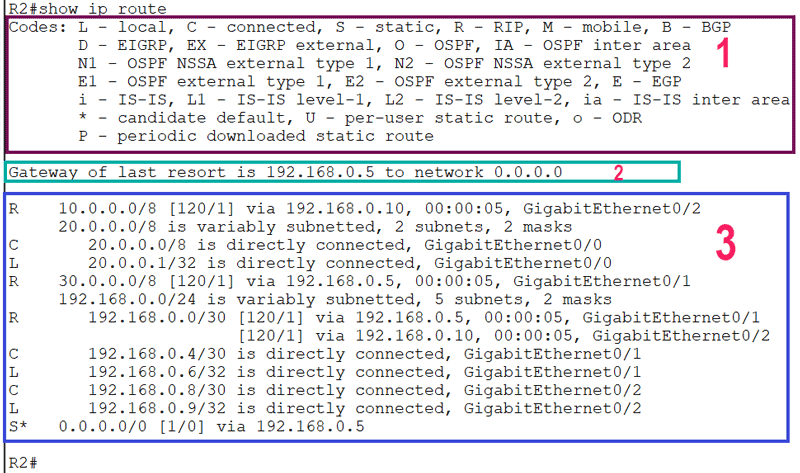

Clase 5 - Ruteo Estático

Router_CBA(config)#ip route 192.168.20.0 255.255.255.0 10.0.0.2
Indica que para llegar a la red 192.168.20.0/24, el router debe enviar los paquetes al router vecino 10.0.0.2.
Router_CBA(config)#ip route 0.0.0.0 0.0.0.0 10.0.0.2
La ruta por defecto se utiliza cuando no existe una ruta más específica para la red de destino. 0.0.0.0 0.0.0.0 representa cualquier red o dirección IPv4.
Router_CBA(config)#ip route 192.168.20.10 255.255.255.255 10.0.0.2
La máscara 255.255.255.255 (/32) indica que la ruta corresponde únicamente a la dirección IP 192.168.20.10.
Router_CBA(config)#ip route 192.168.20.0 255.255.255.0 10.0.0.2 Router_CBA(config)#ip route 192.168.20.0 255.255.255.0 10.0.0.6 200
La segunda ruta posee una Distancia Administrativa (AD) de 200, superior a la ruta estática principal (AD 1).
Por lo tanto, queda como ruta de respaldo y se utilizará cuando la ruta principal deje de estar disponible.
Router_CBA(config)#no ip route 192.168.20.0 255.255.255.0 10.0.0.2
El comando no ip route elimina la ruta estática previamente configurada.
Router_CBA#show ip route
Permite visualizar las rutas conocidas por el router. Una ruta estática aparece identificada con la letra S.
Router_CBA#show ip route static
Router_CBA#show ip interface brief
Permite comprobar las direcciones IP configuradas y el estado de las interfaces.
Router_CBA#show running-config
Router_CBA#ping 192.168.20.1
Permite comprobar si existe conectividad IP con un dispositivo de destino.
Router_CBA#traceroute 192.168.20.1
Permite visualizar los diferentes saltos que realiza un paquete hasta llegar al destino.
En esta clase se trabajó el ruteo estático y la forma en que un router utiliza las rutas para alcanzar redes remotas.
Se configuraron rutas estáticas, rutas por defecto y rutas flotantes, utilizando el comando ip route.
Finalmente, se utilizaron comandos de Cisco IOS para verificar la tabla de ruteo, las interfaces y la conectividad de la red.
← Volver al inicio